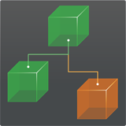

Integration with Other Packages
Packages:
- Behavior Designer
- Corgi Engine - 2D + 2.5D Platformer
- Deftly: Top Down Shooter Framework
- Dialogue System for Unity
- GAC (Great Animation Combos) System
- Inventory Pro
- iRDS - Intelligent Race Driver System
- Motion Controller
- ORK Framework - RPG Engine
- PlayMaker
- Racing Game Starter Kit
- Realistic FPS Prefab
- Realistic Tank Controller
- Rex Engine: A 2D Platformer Engine
- Third Person Controller
- UFPS
- uFS - Flight Simulation Engine
- Ultimate Survival
- Unity UI
- uSim Air Module
- Others
Behavior Designer
Rewired can be used with Behavior Designer by Opsive, a popular visual scripting and behavior tree tool for Unity.
To install the Behavior Designer Integration Pack, do the following:
- Install Rewired and Behavior Designer first. If Behavior Designer is not installed, you will get errors when the integration pack is installed.
- Run the following menu item in the Unity editor:
Window -> Rewired -> Integration -> Behavior Designer -> Install Integration Pack - Follow the on-screen prompts.
To Uninstall:
- Delete the Rewired/Integration/BehaviorDesigner folder
Corgi Engine - 2D + 2.5D Platformer
Corgi Engine by More Mountains is a popular 2D + 2.5D platformer template for Unity.
Requirements:
- Corgi Engine v4.0+
- Unity 5.6.3f1+
To install the Corgi Engine Integration Pack, do the following:
- Install Corgi Engine first before you install Rewired. If you installed Rewired before Corgi Engine, be sure to re-launch the Rewired installer after Corgi Engine finishes installing and allow it to install the Unity input manager entries again because installing Corgi Engine will have replaced Rewired's entries. To re-launch the installer from the menu:
Window -> Rewired -> Setup -> Run Installer - When installing Rewired, install the Touch Controls pack when prompted. If you skipped installation, you can install the Touch Controls from the menu:
Window -> Rewired -> Extras -> Touch Controls -> Install - To install the Corgi Engine integration pack, run the following menu item in the Unity editor:
Window -> Rewired -> Integration -> Corgi Engine -> Install Integration Pack - After the pack is installed, you may need to run the setup script which will set the Script Execution Order on the Corgi Engine input manager script:
Window -> Rewired -> Integration -> Corgi Engine -> Setup -> Run Setup
To Uninstall:
- Delete the Rewired/Integration/CorgiEngine folder
Usage:
Add a Rewired Input Manager to the scene. You can add a pre-configured Rewired Input Manager for Corgi Engine to the scene from the menu:
Window -> Rewired -> Integration -> Corgi Engine -> Create -> Rewired Input Manager
Anywhere where you use the Corgi Engine InputManager component, replace it with the RewiredCorgiEngineInputManager component. You can add the component through the menu:
Component -> Corgi Engine -> Manager -> Rewired Input Manager
Touch Controls:
A default Touch Controller prefab is included in the Rewired/Integration/CorgiEngine/Prefabs folder. You can use this Touch Controller in place of the one that comes with CorgiEngine. To to replace the existing Touch Controller in the demos, you need to add the Touch Controller prefab into the scene underneath the UICamera. Next, find the GUIManager component and replace the references in the fields "Buttons", "Arrows", and "Joystick" with references to the new Touch Controller elements. Specifically hook the main Touch Controller object to the "Buttons" field, then hook the Arrows sub-object to the "Arrows" field, then the Joystick sub-object to the "Joystick" field. These steps are just so you can use the same CorgiEngine InputManager options to display the touch controls and are not mandatory if you'd rather manage their display yourself. You can look at the demo scene Mesa1 located in Rewired/Integration/CorgiEngine/Demos to see the Touch Controls in use. For general information on Rewired's Touch Controls, see the documentation on Touch Controls.
Inventory System:
- The Corgi Engine inventory system uses the Unity UI StandaloneInputModule to control navigation. To change this to use Rewired instead, remove the StandaloneInputModule from the EventSystem in the scene and add a RewiredStandaloneInputModule. See this more information on configuring the RewiredStandaloneInputModule.
- Replace all InventoryInputManager components with the RewiredInventoryInputManager component and copy all relevant inspector values from the old component to the new component.
- Replace all InventoryHotbar components with the RewiredInventoryHotbar component and copy all relevant inspector values from the old component to the new component.
- If the replaced components were referenced by other components, you must re-assign these references using the new components.
Deftly: Top Down Shooter Framework
Deftly: Top Down Shooter Framework by Cleverous aims to deliver flexibility and ease of use into a stable top down shooter environment with AAA quality.
The Rewired integration is included in the package. Please see the Deftly documentation for details.
Note: This integration is a 3rd party integration package and not maintained or supported by Guavaman Enterprises.
Dialogue System for Unity
Dialogue System for Unity by Pixel Crushers makes it easy to add interactive dialogue and quests to your game. It's a complete, robust solution including a visual node-based editor, dialogue UIs, cutscenes, quest logs, save/load, and more.
The Rewired integration is included in the package. Please see the package documentation for details.
Note: This integration is a 3rd party integration package and not maintained or supported by Guavaman Enterprises.
GAC (Great Animation Combos) System
GAC (Great Animation Combos) System by Eric Turgott is an asset that allows you to implement combos for any action game. The integration is included in the package. Please see the GAC documentation for details.
Note: This integration is a 3rd party integration package and not maintained or supported by Guavaman Enterprises.
Inventory Pro
Inventory Pro by Devdog is a highly flexible inventory system for Unity. Inventory Pro can be used for RPG, RTS, FPS, and other game types. The integration is included in the package. Please see the Inventory Pro documentation for details.
Note: This integration is a 3rd party integration package and not maintained or supported by Guavaman Enterprises.
iRDS - Intelligent Race Driver System
iRDS - Intelligent Race Driver System by Jose Garrido is a racing game toolkit that helps you to develop Racing Games. Please see the iRDS documentation for details.
Note: This integration is a 3rd party integration package and not maintained or supported by Guavaman Enterprises.
Motion Controller
Motion Controller by ootii is an animation framework and character controller for any character and any game. You can download the intregration from ootii's Vault. (Search the page for Rewired.)
Note: This integration is a 3rd party integration package and not maintained or supported by Guavaman Enterprises.
ORK Framework - RPG Engine
ORK Framework - RPG Engine is a highly flexible system that allows you to create your own role-playing game without any coding.
Rewired can be used with ORK Framework by following braytendo's tutorial here. Or you can use Unity Input Override instead.
Note: This integration is a 3rd party integration package and not maintained or supported by Guavaman Enterprises.
PlayMaker
Rewired can be used with PlayMaker by Hutong Games, a popular visual scripting tool for Unity.
To install the PlayMaker Integration Pack, do the following:
- Install Rewired and PlayMaker first. If PlayMaker is not installed, you will get errors when the integration pack is installed.
- Run the following menu item in the Unity editor:
Window -> Rewired -> Integration -> PlayMaker -> Install Integration Pack - Follow the on-screen prompts.
To Uninstall:
- Delete the Rewired/Integration/PlayMaker folder
Racing Game Starter Kit
Racing Game Starter Kit by Intense Games is an easy to use asset for creating racing games. The integration is included in the package. Please see the Racing Game Starter Kit documentation for details.
Note: This integration is a 3rd party integration package and not maintained or supported by Guavaman Enterprises.
Realistic FPS Prefab
Realistic FPS Prefab by Azuline Studios is a first-person shooter complete project.
This forum post by longroadhwy shows how to do the integration by modifying a bit of source code.
Note: This integration is a 3rd party integration and not maintained or supported by Guavaman Enterprises.
Realistic Tank Controller
Realistic Tank Controller by Bonecracker Games allows you to build highly customizable battle tanks for your project.
The Rewired integration is included in the package. Please see the package documentation for details.
Note: This integration is a 3rd party integration package and not maintained or supported by Guavaman Enterprises.
Rex Engine: A 2D Platformer Engine
Rex Engine: A 2D Platformer Engine is a 2D platformer engine by Sky Tyroannosaur with a huge suite of features designed to save you time and help you create amazing 2D games.
Requirements:
- Rex Engine 1.03+
- Unity 5.6.3f1+
To install the Rex Engine Integration Pack, do the following:
- Install Rex Engine first before you install Rewired. If you installed Rewired before Rex Engine, be sure to re-launch the Rewired installer after Rex Engine finishes installing and allow it to install the Unity input manager entries again because installing Rex Engine will have replaced Rewired's entries. To re-launch the installer from the menu:
Window -> Rewired -> Setup -> Run Installer - When installing Rewired, install the Touch Controls pack when prompted. If you skipped installation, you can install the Touch Controls from the menu:
Window -> Rewired -> Extras -> Touch Controls -> Install - To install the Rex Engine integration pack, run the following menu item in the Unity editor:
Window -> Rewired -> Integration -> Rex Engine -> Install Integration Pack
To Uninstall:
- Delete the Rewired/Integration/RexEngine folder
Usage:
Add a pre-configured Rewired Input Manager for Rex Engine to the scene from the menu:
Window -> Rewired -> Integration -> Rex Engine -> Create -> Rewired Input Manager
Third Person Controller
Rewired can be used with Third Person Controller by Opsive, a popular third-person game kit. The integration pack can be downloaded from Opsive's site here.
Note: This integration is a 3rd party integration package and not maintained or supported by Guavaman Enterprises.
UFPS
Rewired can be used to provide input for UFPS by Opsive, a popular first person shooter kit. Rewired comes pre-packaged with an integration kit that was designed to work with UFPS 1.4.9+.
To install the UFPS Integration Pack, do the following:
- Ensure that you are running Unity 4.5 or greater.
- Install Rewired and UFPS first. If UFPS is not installed, you will get errors when the integration pack is installed.
- Run the following menu item in the Unity editor:
Window -> Rewired -> Integration -> UFPS -> Install Integration Pack - Follow the on-screen prompts.
- When installation is complete, you will need to create a Rewired UFPS Input Manager in your scene before Rewired will be able to handle input. You can do this from the menu:
Window -> Rewired -> Integration -> UFPS -> Create UFPS Rewired Input Manager - The Rewired UFPS Input Manager contains default settings for all of UFPS's controls for the keyboard, mouse, and dual analog gamepads. If you want to customize the controls, simply click the "Rewired UFPS Input Manager" then edit the settings in the Rewired Editor.
To Uninstall:
- Delete the Rewired/Integration/UFPS folder
- Delete the Rewired UFPS Input Manager from the scene
Notes:
- UFPS's built-in input manager will no longer have any effect as long as the Rewired UFPS Input Manager exists in the scene. Additionally, some UFPS functions such as those designed to let you remap keys will no longer have any effect. You should manage key remapping using Rewired instead.
- The Rewired UFPS integration pack makes no changes to the UFPS source code. You are therefore free to update UFPS as you see fit without losing the integration with Rewired.
- If you install UFPS after installing Rewired, UFPS will overwrite the /ProjectSettings/InputManager.asset in your project. This will overwrite Unity input manager entries that Rewired needs to be able to get mouse input or to get joystick input on platforms that fall back on Unity input as the input source. If this happens, simply reinstall Rewired's Input Manager settings by running the installer from the menu Window -> Rewired -> Setup -> Run Installer and allow it to add the necessary entries in the InputManager.asset file.
FAQ:
The fire button (gamepad right trigger) and right stick look do not work unless I click the mouse button in the main window first. This happens in both the editor and game build. How do I fix this?
This issue is not with Rewired, but rather it is an intentional functionality of UFPS.
The Rewired integration only goes so far as to change the input sources for the Actions requested by the various UFPS scripts by replacing the underlying input manager. It doesn't alter the functionality or code of UFPS in any way so it cannot modify this behavior because the Action processing is blocked in the UFPS character script.
UFPS is in control of the mouse pointer control. It doesn't allow you to fire or move the right stick (mouse look) unless the mouse pointer is captured regardless of the platform. There is an inspector option on the UFPS character controller (VP_FPInput -> Mouse Cursor -> Blocks Mouselook) that changes the mouse capture behavior for the right stick, however this doesn't solve the issue with firing.
The only way to "fix" the issue with the fire button (right trigger) is to change UFPS source code. In VP_FPInput.cs, search for the function called InputAttack and find the two lines that read.
if (!vp_Utility.LockCursor) // <-- Comment out this line return; // <-- Comment out this line
Note that I cannot provide support on how to use UFPS. This information was only added here because I receive support requests on this issue on a regular basis. If you have issues with UFPS, you should contact the developer, Opsive for support.
I get warnings in the console saying the Actions "LeftTrigger" and "RightTrigger" are missing the first time I press the gamepad triggers in every game session. How do I fix this?
This occurs because the developer of UFPS added LeftTrigger and RightTrigger Actions to UFPS recently when they added joystick support. They were not added to the default UFPS Rewired Input Manager because they were only added to UFPS as a way to convert analog gamepad trigger axis values to button values, but Rewired handles this already using the default Attack action. Adding the Actions would just add confusion since they would be unused and only added to silence those warnings. The warnings are harmless and only show up the first time you press the triggers. If you really want to get rid of the warnings, add two Actions called LeftTrigger and RightTrigger.
uFS - Flight Simulation Engine
uFS - Flight Simulation Engine by REMEX Software Ltd delivers previously unseen Flight Simulation accuracy to the Unity Asset Store.
Rewired includes an integration pack for uFS which can be installed from the menu:
Rewired -> Integration -> uFS -> Install Integration Pack
In addition to the integration pack, Unity Input Override must be installed.
Usage
Create a Rewired UnityFS Input Manager from the menu:
Rewired -> Integration -> uFS -> Create uFS Rewired Input Manager
This will set up default controls that will work with uFS.
To Uninstall
- Delete the Rewired/Integration/UFS folder.
- Optionally uninstall Unity Input Override.
Ultimate Survival
Ultimate Survival by Winterbyte is a collection of systems that will help you develop your own survival game.
Requirements:
- Ultimate Survival 0.13
- Unity 5.6.3f1+
To install the Ultimate Survival Integration Pack, do the following:
- Install Ultimate Survival first before you install Rewired. If you installed Rewired before Ultimate Survival, be sure to re-launch the Rewired installer after Ultimate Survival finishes installing and allow it to install the Unity input manager entries again because installing Ultimate Survival will have replaced Rewired's entries. To re-launch the installer from the menu:
Window -> Rewired -> Setup -> Run Installer - To install the integration pack, run the following menu item in the Unity editor:
Window -> Rewired -> Integration -> Ultimate Survival-> Install Integration Pack
To Uninstall:
- Delete the Rewired/Integration/UltimateSurvival folder
Usage:
- Remove any existing Ultimate Survival "Input Manager" components from Ultimate Survival objects in the scene or from prefabs. One prefab that contains the Input Manager component is Ultimate Survival/Resources/_Scene Base/_Game Controller.
- Add a pre-configured Rewired Input Manager for Ultimate Survival to the scene from the menu:
Window -> Rewired -> Integration -> Ultimate Survival -> Create -> Rewired Input Manager
Limitations:
The Ultimate Survival inventory system was designed to be used with the mouse. The Rewired integration does not do anything to change this.
Notes:
The automated script updater will run when you install the integration pack and will make modifications to some Ultimate Survival scripts. If you need to run the updater again, you can do so from:
Window -> Rewired -> Integration -> Ultimate Survival -> Setup -> Run Script Updater
If you update Ultimate Survival, the scripts will need to be updated again. Be aware that the script updater cannot be aware of any changes made by the author of Ultimate Survival so the updater may not work on versions of Ultimate Survival later than the version stated above in the Requirements section.
Unity UI
Rewired can be used as the input source for Unity's UI system introduced in Unity 4.6. In order to use Rewired to control Unity's UI, you must replace the StandaloneInputModule component on the UI EventSystem object with the RewiredStandaloneInputModule. Please see Rewired Standalone Input Module for more information.
uSim Air Module
uSim Air Module by Softdimension Games helps you build flight models for any aircraft. Smooth and realistic results.
The Rewired integration is included in the package. Please see the package documentation for details.
Note: This integration is a 3rd party integration package and not maintained or supported by Guavaman Enterprises.
Others
Most Unity Asset Store assets can be used with Rewired by using the Unity Input Override system. Please see Unity Input Override for details.